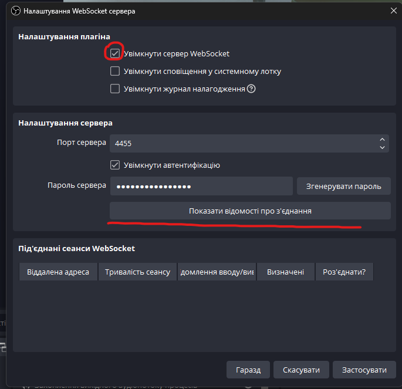
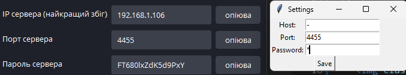

1️⃣ Для початку встановіть додаток.
Якщо у вас відсутній Python, виберіть його при установці
Для наступної взаємодії включіть Websocket в OBS

2️⃣ В розділі "Налашування плагіна" встановіть галочку "Увімкнути сервер WebSocket"
Нажміть показати "відомості про з'єднання" і скопіюйте данні в налаштування бота


Перейдіть в тг бота, тиць
Команди тг: /start, /finish